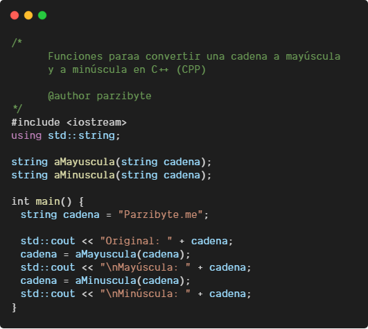

Microsoft pone al alcance, de toda la comunidad planetaria de programadores, sus plataformas de desarrollo, como Visual Studio Code, de licencia gratuita (Freeware: no pagas por utilizarla), multiplataforma (para Windows, Linux y Mac OS), bajo el entorno .NET Core; y también Visual Studio (de pago), en sus versiones de 2017/2019, para Windows y Mac OS, bajo el entorno de .NET Framework. La diferencia entre ambos entornos es el destinatario final de las aplicaciones, siendo el último solo para Windows, mientras que el primero para las 3 plataformas mencionadas.
Para trabajar con C# es recomendable utilizar Microsoft Visual Studio, ya que ha sido desarrollado especialmente para ello y soporta la carga y trabajo con su mismo lenguaje.
Por ello, nos descargamos Microsoft Visual Studio y ejecutamos el programa. Puede ocurrir que te pida la instalación de algunas librerías esenciales para un correcto funcionamiento del programa, que nos la podemos descargar gratuitamente desde Microsoft.
Una vez ejecutado el programa, puedes crear un documento de tipo C# y ya puedes escribir en este código.

Aprende .NET Core
Actualmente el lenguaje C# es uno de los lenguajes que más vale la pena aprender, ya que es muy útil porque da soluciones a problemas que otros lenguajes de programación no son capaces de resolver. Además, es un lenguaje nativo de .NET.
Cabe destacar que todos los productos actuales de Microsoft, incluida la nube, denominada AZURE, se les pueden desarrollar funcionalidades adicionales gracias a C#.
Por todo ello, en Besoftware vamos a realizar un curso en .NET Core, una de las tecnologías más demandadas, en el que aprenderás todo sobre el lenguaje C# y mucho más.
